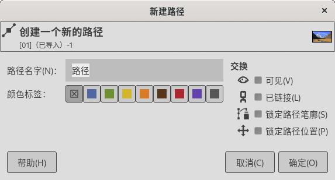

可停靠对话框→路径
没有快捷键。
高级用户
可停靠对话框→路径
路径对话框( )用来管理路径，包括创建路径、删除路径、保存路径、路径转换为选区等。
{kind=link}
GIMP中与路径有关的是工具箱中的路径工具和菜单编辑→勾画路径，请参照理解。
提示
驿窗注：路径概念是一个比较常用的重要概念，在矢量软件中(Inkscape、CorelDRAW、Illustrator等)大量使用，如果您希望在平面相关领域发展，请务必掌握路径的应用。
概述
路径的用途是帮助创建选区。
路径是平滑曲线(Bézier曲线)，但可以控制为不平滑。
路径至少有两个节点。
每个节点可以有最多两个控制手柄，最少零个控制手柄。
路径可以封闭，也可以不封闭。
使用路径可以创建复杂的选区。
下面的 路径示例 截图中，左侧是一个未封闭路径，右侧是一个封闭路径。
截图中左侧路径被选中，右侧路径未选中。
被选中的路径会显示路径上的全部节点。
截图中左侧路径上实心小圆圈是未选中节点，空心小圆圈是选中节点。
选中节点会显示控制手柄。
未选中的节点会隐藏手柄。
截图中穿过空心小圆圈的直线，是控制手柄的方向线，表示控制手柄的方向。
截图中穿过空心小圆圈的直线的两端各有一个空心小方块，小方块是控制手柄。
有两个手柄的节点是平滑节点，只有一个手柄或没有手柄的节点是不平滑节点；不平滑节点会产生拐角。
多个路径会在路径对话框中依次上下排列，成为“路径堆栈”。
路径默认不可见，即编辑路径过程中如果切换其它工具，路径就会隐藏。
在路径堆栈中，路径缩略图左侧如果显示眼睛图标(
 )，则路径会在图像上显示。(点击眼睛图标可以切换显示/隐藏)
)，则路径会在图像上显示。(点击眼睛图标可以切换显示/隐藏)路径堆栈中点击并拖动路径缩略图到其它图像，可以把路径拷贝到该图像中。(位置可能需要调整)
路径示例
路径的操作方法请参考路径工具。
路径对话框中的选项说明
请参考前面的截图 可停靠对话框→路径 :
路径堆栈中，路径缩略图左侧如果显示眼睛图标(
)，表示路径是可见的。点击眼睛图标可以隐藏眼睛图标，即路径隐藏不可见。按Shift键点击眼睛图标，会导致仅被点击的路径可见，其它所有路径均隐藏不可见。路径堆栈中，路径缩略图左侧如果显示锁链图标(
 )，表示路径被关联。被关联的路径可以同时被操作，比如移动一个显示锁链图标的路径，其它所有显示锁链图标的路径会同时移动相同的距离。
)，表示路径被关联。被关联的路径可以同时被操作，比如移动一个显示锁链图标的路径，其它所有显示锁链图标的路径会同时移动相同的距离。路径堆栈中，点击路径缩略图不松手持续一小段时间后，缩略图会放大显示。
当前选中的路径会高亮显示。
缩略图右边的文字是路径名称，双击可修改。(F2)
锁定路径笔廓：待更新
锁定路径位置：激活此选项后，路径位置被固定，无法移动。
路径管理
在路径堆栈的底部，从左到右有八个按钮(参考前面的截图 路径对话框 )，可以用来管理路径：
(
 )创建新路径：点击可以在当前路径上方创建一个新路径，默认名称为“路径”，双击名称可以修改名称。如果点击时按Shift键，会按最近一次创建新路径时的参数直接创建新路径。
)创建新路径：点击可以在当前路径上方创建一个新路径，默认名称为“路径”，双击名称可以修改名称。如果点击时按Shift键，会按最近一次创建新路径时的参数直接创建新路径。
新建路径
路径名字：路径的名称。
颜色标签：点击其中一个颜色按钮后，创建好的路径的”眼睛”图标会显示这个背景色。如果图像中有很多个路径，这个功能可能会很有用。
可见：是否可见。
已链接：是否链接。
锁定路径笔廓：待更新
锁定路径位置：勾选此选项后，路径位置被固定，无法移动。
(
 )上移路径：点击可以把当前路径向上移动一级；按Shift键点击可以把路径移到路径堆栈的顶部。
)上移路径：点击可以把当前路径向上移动一级；按Shift键点击可以把路径移到路径堆栈的顶部。(
 )下移路径：点击可以把当前路径向下移动一级；按Shift键点击可以把路径移到路径堆栈的底部。
)下移路径：点击可以把当前路径向下移动一级；按Shift键点击可以把路径移到路径堆栈的底部。(
 )复制路径：点击可以创建一个当前路径的复本，放在当前路径的上方。
)复制路径：点击可以创建一个当前路径的复本，放在当前路径的上方。(
 )路径转换为选区：点击可以把选中的路径转换为选区，原路径不变。
)路径转换为选区：点击可以把选中的路径转换为选区，原路径不变。
点击时按Shift键会把转换的选区与当前存在的选区合并，相当于并集；
点击时按Ctrl键会从当前存在的选区减去转换的选区，相当于差集；
点击时按Ctrl+Shift键会把转换的选区与当前存在的选区相交，保留共同的部分，相当于交集；
(
 )选区转换为路径：点击会把当前转换为路径，原选区不变。(点击时按Shift键会显示高级选项)
)选区转换为路径：点击会把当前转换为路径，原选区不变。(点击时按Shift键会显示高级选项)( )勾画路径：点击可以沿当前路径描边，选项说明请参考菜单编辑→勾画路径。(点击时按Shift键会按上一次勾画参数直接进行描边)
(
 )删除路径：点击可以删除当前路径。
)删除路径：点击可以删除当前路径。
{kind=link}
路径弹出菜单
在路径堆栈中右键点击路径，会弹出一个菜单：
路径弹出菜单
编辑路径：点击后会显示当前选中路径的全部节点，您可以使用路径工具对其进行编辑。
编辑路径属性：请参考路径管理⇒创建新路径。
颜色标签：请参考路径管理⇒颜色标签。
新建路径：请参考路径管理⇒创建新路径。
上移路径：请参考路径管理⇒上移路径。
下移路径：请参考路径管理⇒下移路径。
复制路径：请参考路径管理⇒复制路径。
删除路径：请参考路径管理⇒删除路径。
合并可见路径：合并所有可见路径(即路径堆栈中显示“眼睛”图标的路径)，将它们变成一个整体路径，方便您对它们进行统一操作，比如勾画相同的样式。
路径到选区：把当前路径转换为选区，现有选区会消失。
添加到选区：把当前路径转换为选区，并与现有选区相加，相当于并集，等同于按Shift键点击(
)按钮。从选区中减去：把当前路径转换为选区，然后用现有选区减去这个转换来的选区，相当于差集，等同于按Ctrl键点击(
)按钮。与选区相交：把当前路径转换为选区，然后与现有选区相交，相当于交集，等同于按Ctrl+Shift键点击(
)按钮。选区到路径：把当前选区转换为路径，选区保持不变。
填充路径：填充路径所包围的区域，选项说明请参考菜单 编辑→填充路径。
勾画路径：沿当前路径描边，选项说明请参考菜单编辑→勾画路径。
复制路径：把当前路径复制到路径剪贴板。(复制的路径可以粘贴到其它图像中)
粘贴路径：把路径剪贴板中的路径粘贴到当前路径的上方。
导出路径：把当前路径保存成SVG文件，这个SVG文件可以用Inkscape编辑。
导入路径：把一个SVG文件导入到当前图像中。
此选项的意义在于，您可以使用Inkscape软件创建复杂的路径，然后保存成SVG文件；再打开GIMP，把Inkscape制作的SVG路径导入进来直接使用。
提示
关于Inkscape的操作方法，请参考Inkscape 操作指南。
高级用户/开发人员
选区转换为路径的高级设置
在路径堆栈的底部，点击(  )按钮会把选区转换为路径；如果点击时按Shift键会显示高级选项：
)按钮会把选区转换为路径；如果点击时按Shift键会显示高级选项：
( 以下内容来自GIMP官方文档 )
Align Threshold：如果两个端点的距离比这个值更近，它们就会相等。
Corner Always Threshold：如果一个点与它的前点和后点所定义的角度小于这个值，它就是一个角，即使它在Corner Surround像素范围内，而这个点的角度更小。
Corner Surround：判断一个点是否为角时要考虑的点的数量。
Corner Threshold：如果一个点、它的前点和后点定义的角度小于这个值，它就是一个角。
Error Threshold：拟合样条曲线不能接受的误差量。如果任何像素离拟合曲线的距离超过这个值，算法就会再次尝试。
Filter Alternative Surround：滤波时要考虑的第二个相邻点。
Filter Epsilon：如果Filter Surround和Filter Alternative Surround点产生的向量之间的角度相差超过这个数，就使用Filter Alternative Surround的那个点。
Filter Iteration Count：对原始数据点进行平滑处理的次数。大幅增加这个数字，到50次左右，可以产生更好的结果。但如果没有找到任何“应该”是角的点，曲线就会在该点周围疯狂地变化。
Filter Percent：要产生新的点，就用旧点加上这个点乘以相邻点。
Filter Secondary Surround：相邻点的数量，如果Filter Surround点定义了一条直线，则要考虑它的数量。
Filter Surround：滤波时要考虑的相邻点的数量。
Keep Knees：这个复选框表示在找到轮廓后是否要删除“knee”点。
Line Reversion Threshold：如果一样条曲线比这个值更接近直线，它保持为一条直线，即使它在其他情况下会被改回曲线。这是由曲线长度的平方加权的，以使较短的曲线更容易被还原。
Line Threshold：在将样条线更改为直线之前，它可以从由其端点确定的线偏离(平均)多少个像素。
Reparametrize Improvement：如果重新参数化不能使拟合度提高这么多百分比，算法就会停止执行。
Reparametrize Threshold：重新参数化无意义的误差量。例如，当算法试图用单一样条曲线拟合“O” 的外轮廓时，就会发生这种情况。初始拟合的效果不够好，Newton-Raphson迭代也无法改进。可能是检测算法未找到任何角的存在。
Subdivide Search：远离最差点的曲线百分比，以寻找更好的细分位置。
Subdivide Surround：当决定一个点是否是更好的分割点时，需要考虑的点的数量。
Subdivide Threshold：一个点能从直线上偏离多少像素仍然能被认为是一个较好的分割点。
Tangent Surround：计算一个点的切线近似值时，在该点两边要计算的点的数量。